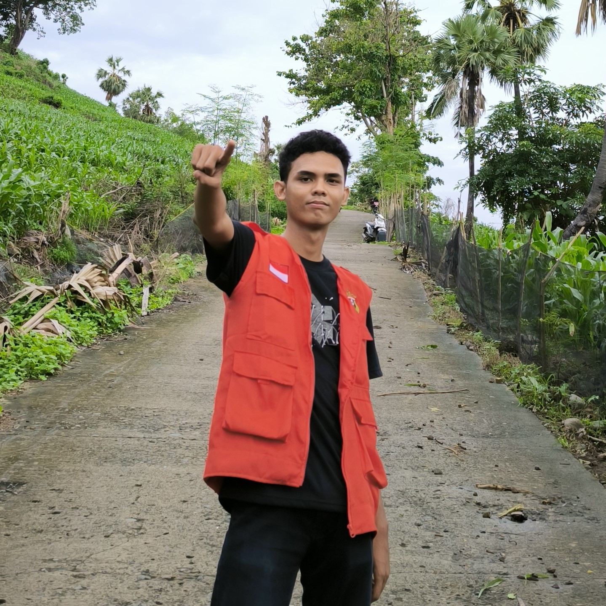
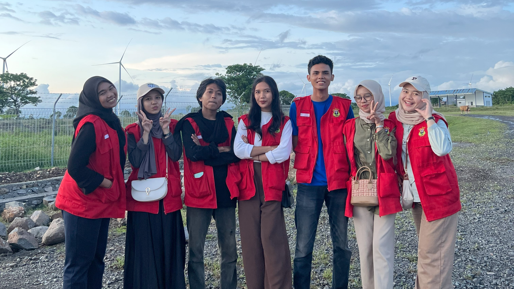
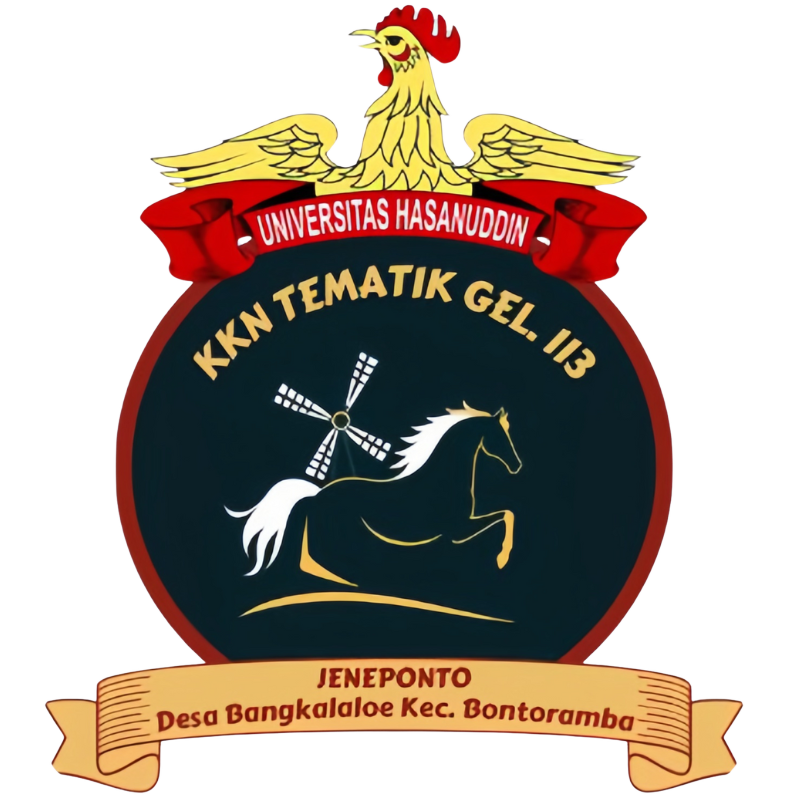

Website profil Desa Bangkalaloe ini dibuat oleh mahasiswa KKN Desa Bangkalaloe Universitas Hasanuddin guna memenuhi program kerja pembuat website profil dan informasi Desa Bangkalaloe. Terima kasih kepada Kepala Desa, aparat Desa, dan masyarakat setempat yang juga ikut berpartisipasi dalam pengerjaan Website ini.
Mahasiswa KKN Gel. 113 Universitas Hasanuddin yang di tempatkan di Desa Bangkalaloe merupakan penanggung jawab dalam pembuatan website ini. Posko KKN ini diketuai oleh Muh. Sahrul Saputra dan beranggotakan 7 orang yang berasal dari beberapa jurusan berbeda dari Universitas Hasanuddin. Posko ini menaruh harapan semoga kehadirannya mampu memberikan dampak positif bagi desa ini dan masyarakat sekitar dengan mengadakan program kerja yang sesuai dengan kondisi Bangkalaloe saat ini.
Diantara Program kerja yang disusun oleh peserta KKN di desa ini salah satunya yaitu Pembuatan Website profil dan informasi Desa Bangkalaloe. Semakin berkembangnya inovasi dibidang teknologi menuntut kita untuk bisa beradaptasi dengan hal tersebut. Tujuannya tentunya untuk mempermudah segala akses kerja yang akan dilakukan. Tujuan disusunnya program Kerja "Pembuatan Website profil dan informasi Desa Bangkalaloe" ini agar bisa menjadi wadah bagi seluruh masyarakat untuk mengakses Informasi mengenai Desa Bangkalaloe dengan mudah. Selain itu Website ini nantinya akan menghadirkan informasi mengenai Desa Bangkalaloe sehingga diharapkan mampu menarik perhatian bagi masyarakat umum kemudian membuat Desa Bangkalaloe lebih dikenal lagi dan tentunya lebih maju.

Ammar Tyo Pasaribu

Mahasiswa KKN Gel. 113 Unhas Desa Bangkalaloe

Logo Posko KKN Unhas Desa Bangkalaloe